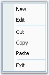

Visual Style for a popupmenu can be controlled by using PopupMenu.ParentBarItem.Style property.
|
[C#]
this.popupMenu1.ParentBarItem.Style = Syncfusion.Windows.Forms.VisualStyle.Office2007Outlook; |
|
[VB.NET]
Me.popupMenu1.ParentBarItem.Style = Syncfusion.Windows.Forms.VisualStyle.Office2007Outlook |

Figure 821: PopupMenu with VisualStyle = "Office2007Outlook"
See Also